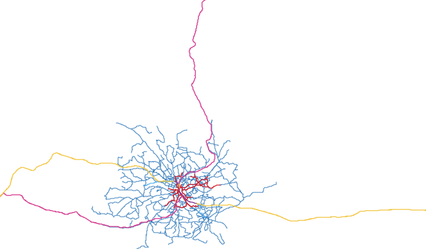
Kraków
KMK — Kraków Public Transport
187 lines · 3,262 stops
164 bus
23 tram
Open the map →
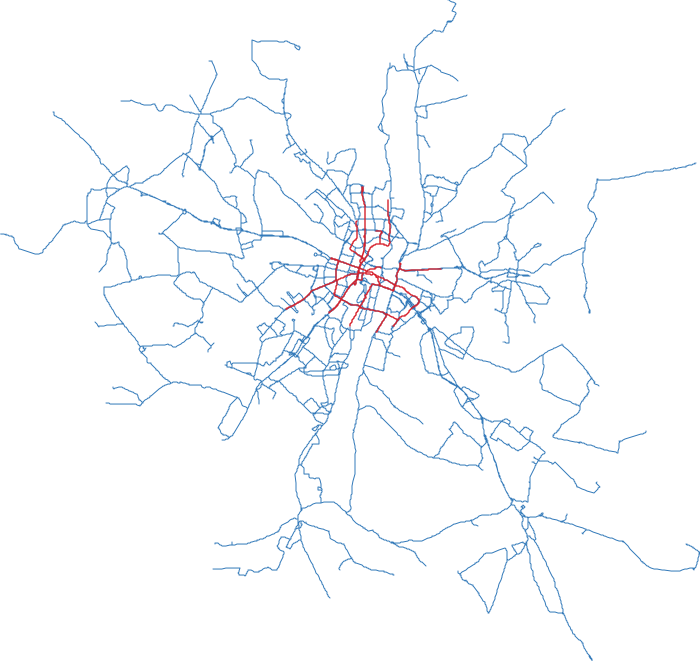
Poznań
ZTM Poznań
192 lines · 3,060 stops
173 bus
19 tram
Open the map →
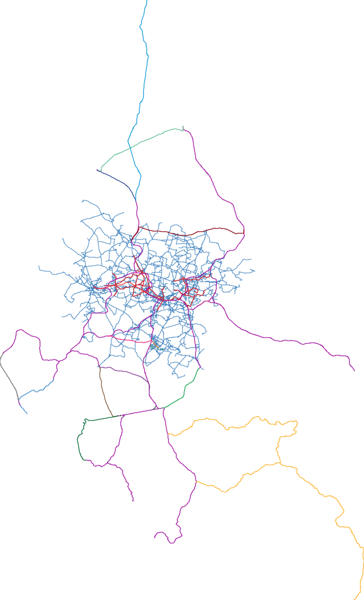
Katowice · GZM Metropolis
ZTM — Metropolia GZM
467 lines · 7,346 stops · the largest network of the family
401 bus
8 trolleybus
31 metroline
27 tram
Open the map →
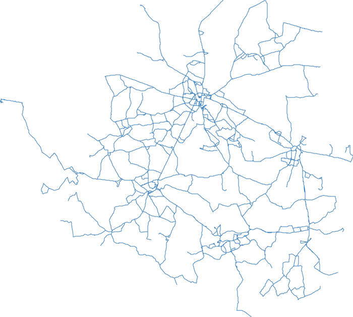
Rybnik Region
KM Rybnik · BKM Żory · MZK Jastrzębie-Zdrój · Wodzisław county
123 lines · 1,650 stops · four GTFS feeds, none with shapes
123 bus
Open the map →
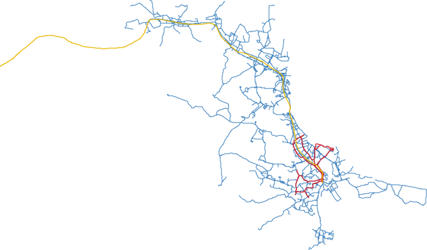
Tricity — Gdańsk · Gdynia · Sopot
ZTM Gdańsk + ZKM Gdynia
191 lines · 2,655 stops · two GTFS feeds merged
164 bus
16 trolleybus
11 tram
Open the map →
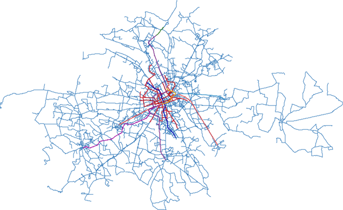
Warsaw & Grodzisk Mazowiecki
ZTM Warszawa (WTP) · GPA Grodzisk · WKD
379 lines · 8,554 stops · 13,568 km — two operators on one sheet, the SKM and the WKD in their colours
344 bus
27 tram
2 metro
5 SKM
1 WKD
Open the map →
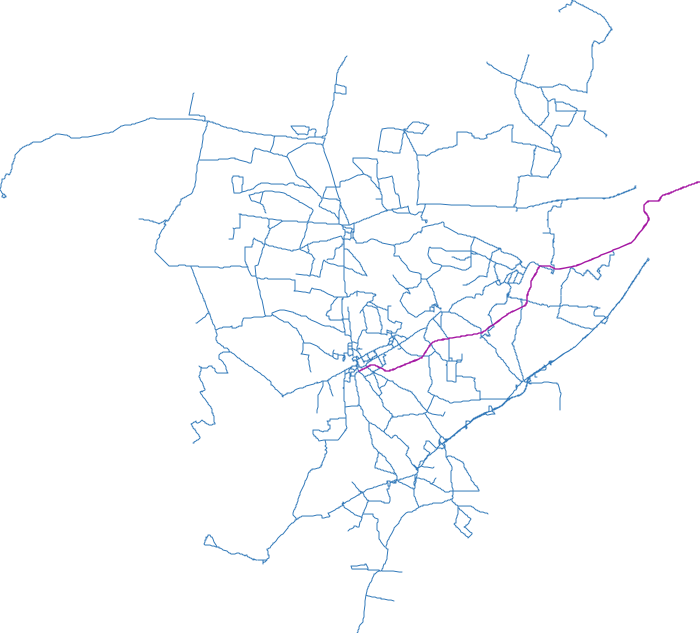
Grodzisk Mazowiecki Region
GPA — Grodziskie Przewozy Autobusowe · WKD
66 lines · 1,781 stops · a county network, no shapes and no direction_id
65 bus
1 railway
Open the map →
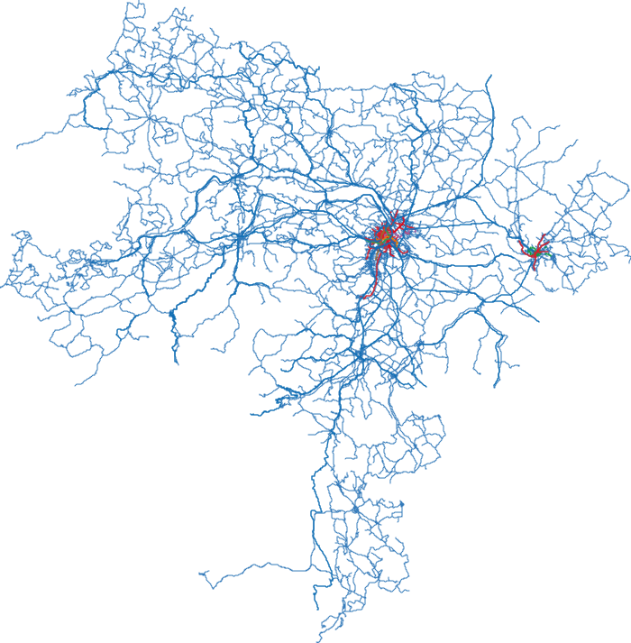
Vienna
Wiener Linien · Badner Bahn (Wiener Lokalbahnen)
189 lines · 4,196 stops · the sharpest match of the family
154 bus
30 tram
5 U-Bahn
Open the map →
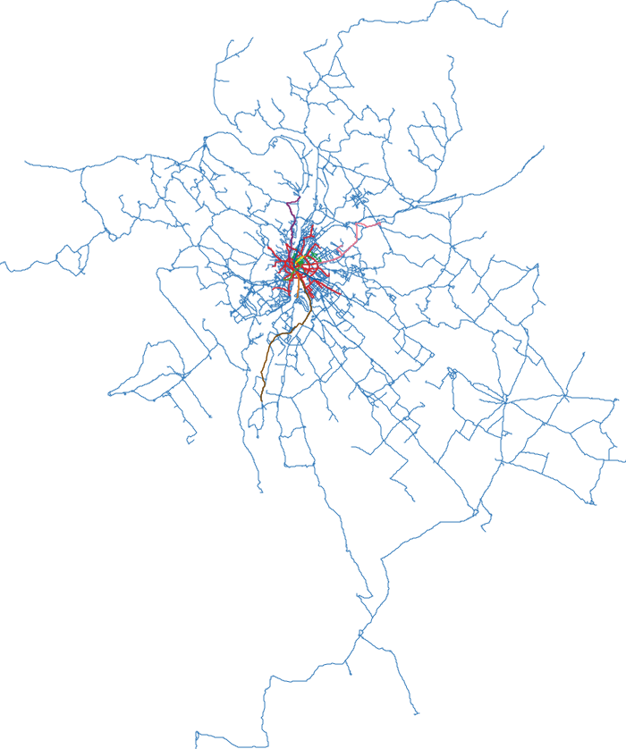
Budapest
BKK — Budapesti Közlekedési Központ · MÁV-HÉV
376 lines · 5,518 stops · 8,427 km — incl. the Fogaskerékű and the HÉV out to Ráckeve
303 bus
17 trolleybus
47 tram
4 metro
5 HÉV
Open the map →
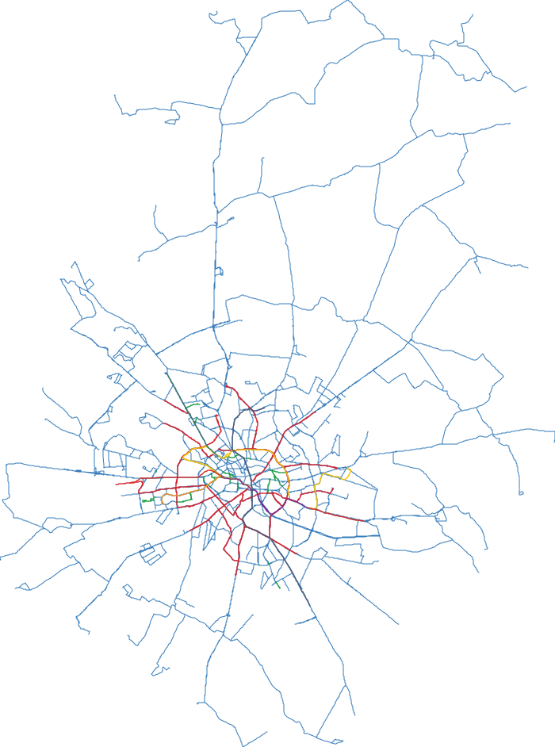
Bucharest & Ilfov
TPBI — STB · Metrorex · Ilfov operators
201 lines · 4,264 stops
166 bus
17 trolleybus
13 tram
5 metro
Open the map →
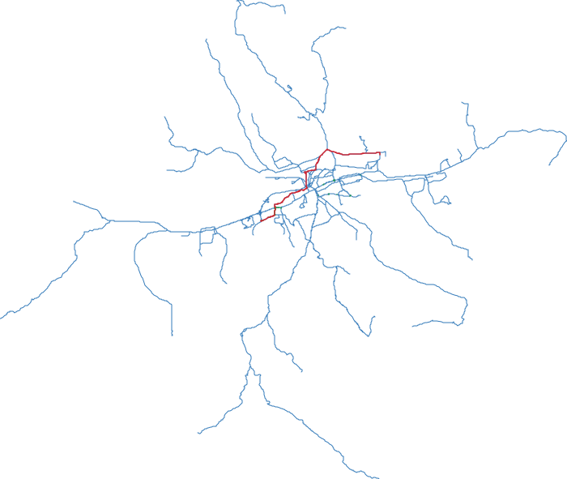
Cluj-Napoca
Compania de Transport Public Cluj-Napoca (CTP)
107 lines · 767 stops · buses, trolleybuses and four tram lines
89 bus
14 trolleybus
4 tram
Open the map →
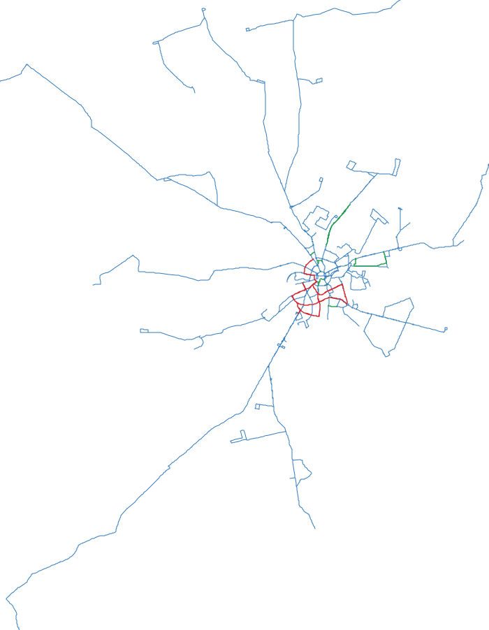
Timișoara
Societatea Metropolitană de Transport Timișoara (SMTT / STPT)
56 lines · 821 stops · the Bega vaporetto left out on purpose
42 bus
8 trolleybus
6 tram
Open the map →
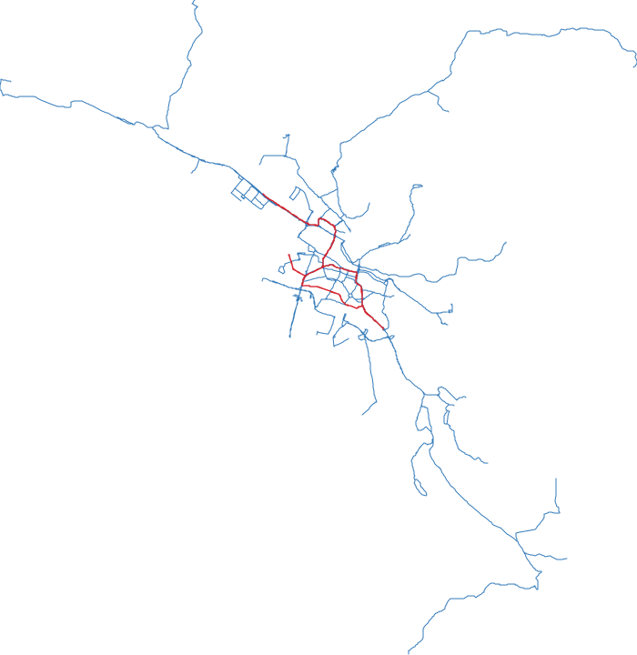
Oradea
Oradea Transport Local (OTL)
57 lines · 556 stops · RoHu runs across the border to Debrecen
50 bus
7 tram
Open the map →
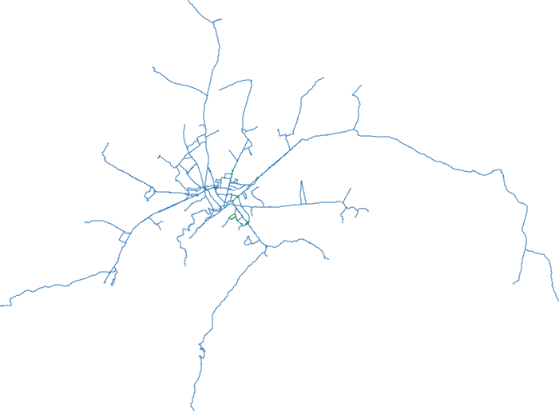
Brașov
Regia Autonomă de Transport Brașov (RATBV)
84 lines · 832 stops · timetables from a community GTFS, not the operator
75 bus
9 trolleybus
Open the map →
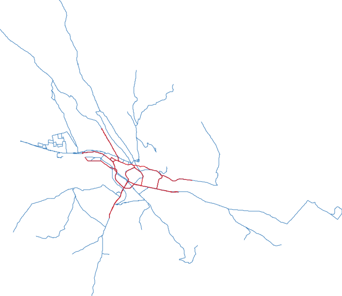
Iași
Societatea de Transport Public Iași (SCTP)
53 lines · 703 stops · trams 1 and 13 circle Copou
44 bus
9 tram
Open the map →
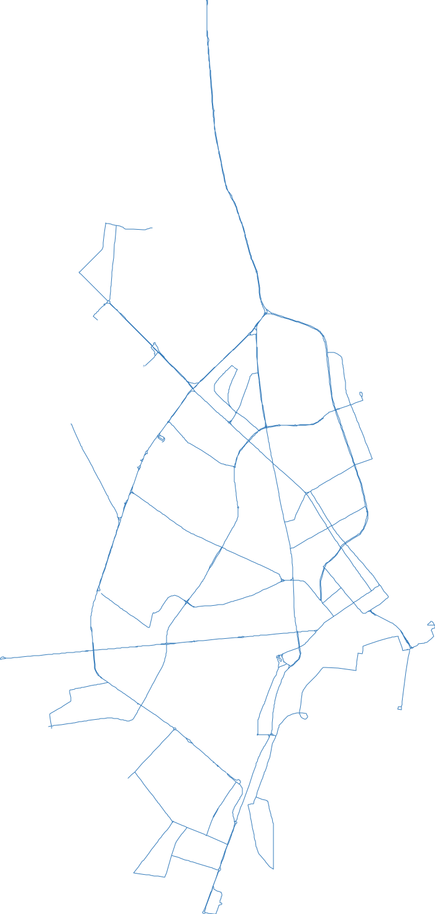
Constanța
CT BUS S.A. Constanța
20 lines · 369 stops · the smallest network of the family
20 bus
Open the map →
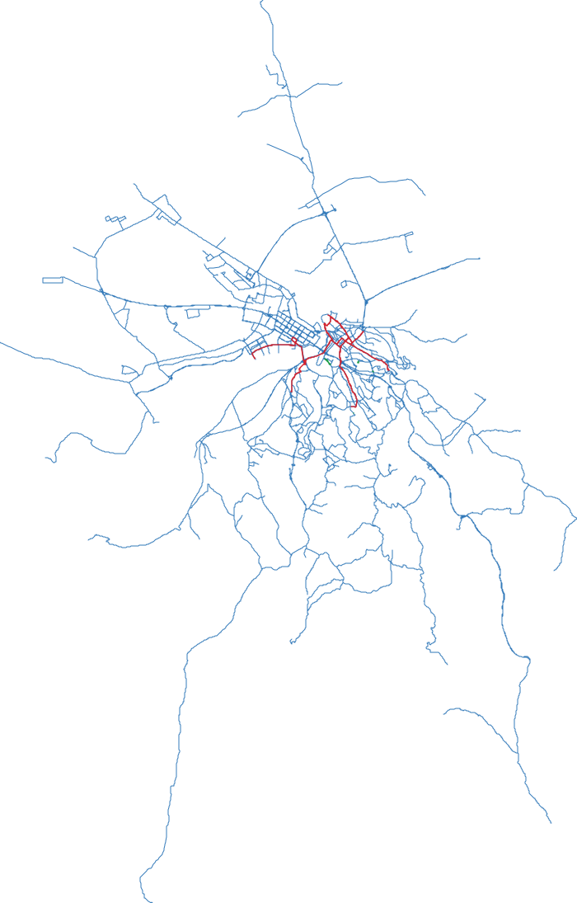
Belgrade
Београд Плус (Beograd Plus)
241 lines · 3,329 stops · street names in Cyrillic and Latin
224 bus
6 trolleybus
11 tram
Open the map →
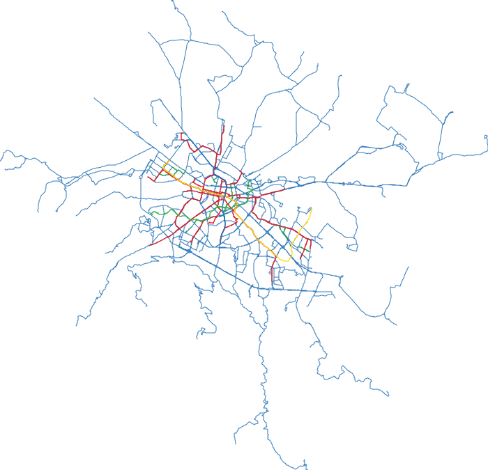
Sofia
Център за градска мобилност (CGM)
140 lines · 2,211 stops · every mode numbered from 1
100 bus
17 trolleybus
19 tram
4 metro
Open the map →
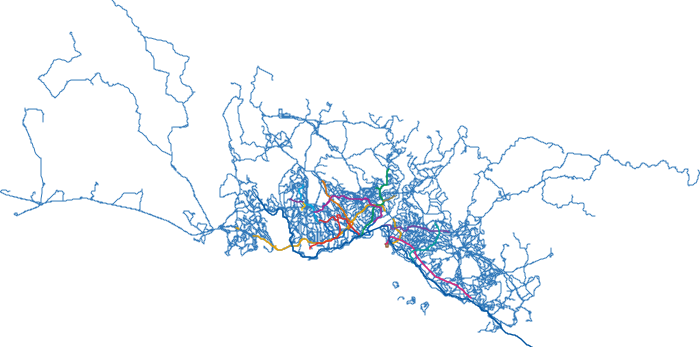
Istanbul
İETT · Metro İstanbul · Marmaray (TCDD)
813 lines · 13,788 stops · the largest bus network of the family
787 bus
8 Metrobüs
3 tram
15 metro & Marmaray
Open the map →
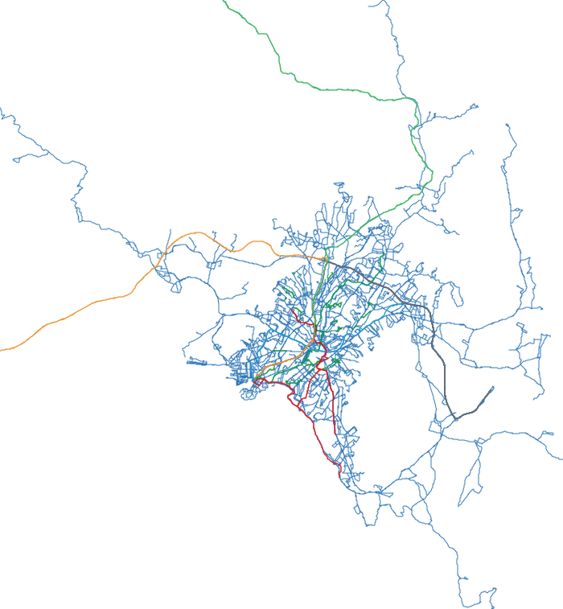
Athens
OASA — OSY buses + STASY metro & tram
288 lines · 7,159 stops
263 bus
20 trolleybus
3 metro
2 tram
Open the map →
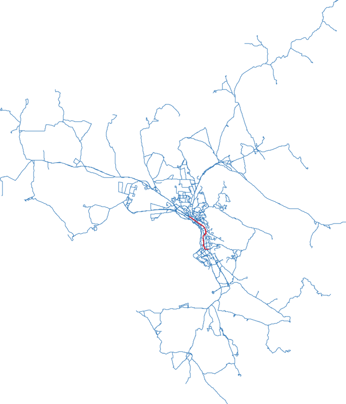
Thessaloniki
OASTH + Thessaloniki Metro
228 lines · 3,666 stops
227 bus
1 metro
Open the map →
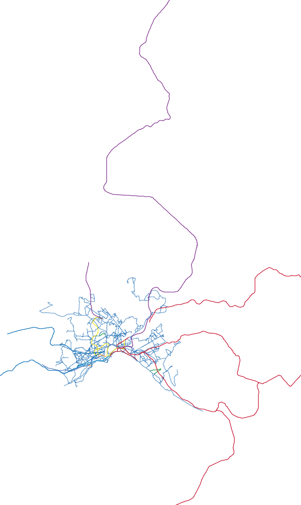
Naples
ANM · EAV (Circumvesuviana, Cumana, Circumflegrea)
120 lines · 2,491 stops · two operators, metro, funiculars and narrow-gauge rail
96 bus
4 trolleybus
3 tram
17 metro, funicular & EAV
Open the map →
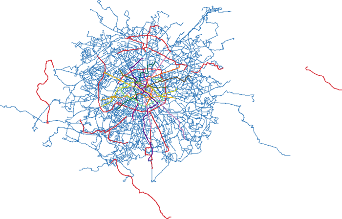
Paris
Île-de-France Mobilités — RATP and the Paris-area operators
430 lines · 12,628 stops · 9,424 km — Paris and the petite couronne, the whole métro
399 bus
15 tram
16 métro
Open the map →
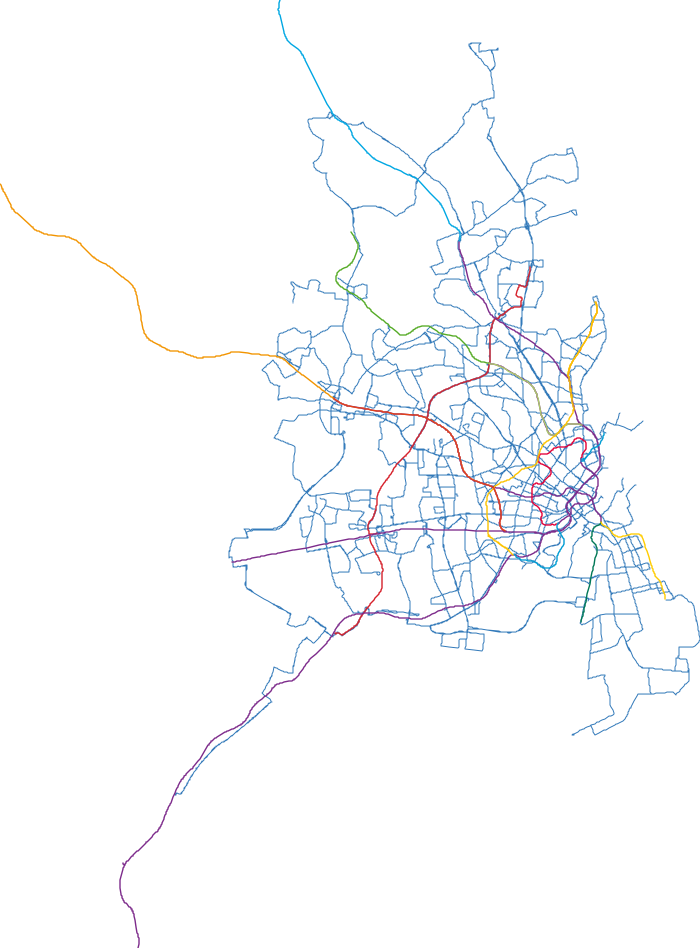
Copenhagen
Movia · Metroselskabet · DSB S-tog · Hovedstadens Letbane
96 lines · 3,531 stops · 3,305 km — all seven S-tog lines
84 bus
1 letbane
4 metro
7 S-tog
Open the map →
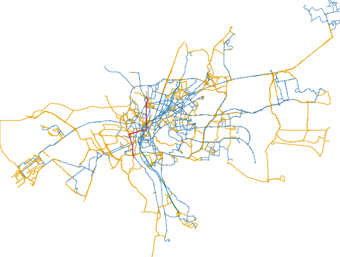
Cairo
Transport for Cairo — CTA · Mwasalat Misr · paratransit · Metro
995 lines · 2,983 stops · the densest network of the family
354 bus
639 paratransit
2 metro
Open the map →
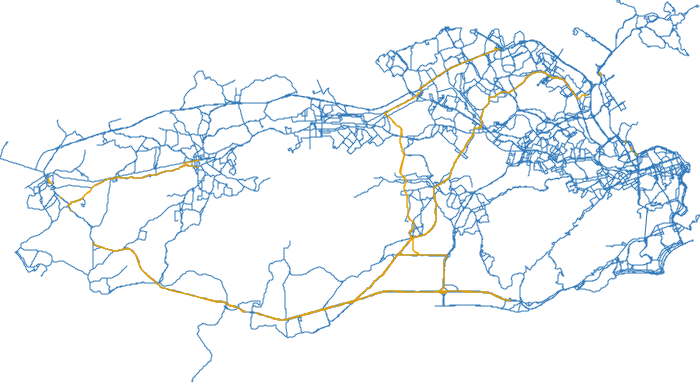
Rio de Janeiro
Secretaria Municipal de Transportes (SMTR) · MOBI-Rio
498 lines · 7,519 stops · 23,980 km — the tightest match of the family
468 bus
30 BRT
Open the map →
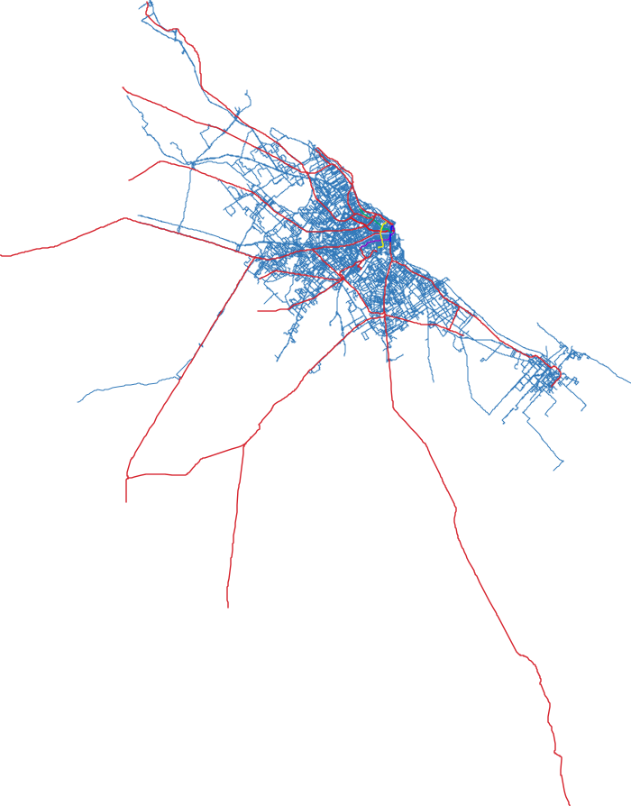
Buenos Aires
Colectivos AMBA · SBASE · Trenes Argentinos
302 lines · 43,585 stops · 53,506 km — the largest of the family, every ramal drawn
288 colectivos
6 subte
2 premetro
6 trenes
Open the map →